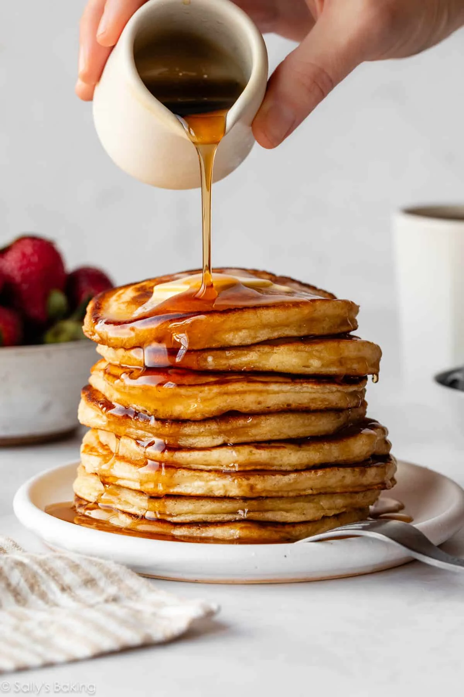

Fluffy Buttermilk Pancakes

The "Weekend Comfort" Classic
Prep Time: 10 mins | Cook Time: 15 mins | Servings: 4
Ingredients:
- 2 cups all-purpose flour
- 2 tbsp sugar
- 2 tsp baking powder
- 1 tsp baking soda
- 2 cups buttermilk
- Honey
Step by Step:
- Dry Mix: Whisk flour, sugar, baking powder, and soda in a large bowl.
- Wet Mix: In a separate bowl, whisk buttermilk, eggs, and butter.
- Combine: Pour wet into dry. Stir until just combined (lumps are okay!).
- Fry: Pour 1/4 cup batter onto a hot, greased griddle. Flip when bubbles appear on the surface.
- Optional: Drizzle some sweet honey over your pancakes